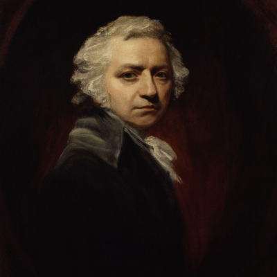
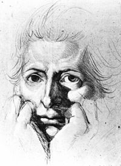
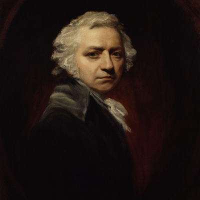
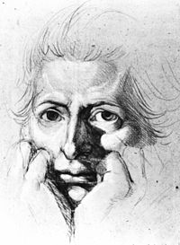

HENRY FUSELI

En esta pagina mostraremos una obra creada por Henry Fuseli la cual es nombrada la pesadilla, además de ver datos de este autor y de la obra sobre todo datos históricos que nos ayuden a conocer mejor esta obra de arte y a su autor.
BIOGRAFÍA
Johann Heinrich Füssli (una vez en Gran Bretaña Henry Fuseli) fue uno de esos artistas inclasificables, que no podemos más que denominar visionarios.
Se puede considerar un neoclásico, pero su obra es claramente romántica, por subjetiva y emocional, por no decir directamente irracional. Por ello es oficialmente considerado un predecesor del surrealismo.
Nacido en Zürich, Fuseli empezó como escritor vinculado al Sturm und Drang, movimiento pre-romántico que buscaba la expresión (o más bien explosión) de los sentimientos. Muy pronto se iniciaría en la pintura, en la que ya refleja un gusto por lo grotesco y lo oscuro.
Con 23 años realiza su primer viaje a Inglaterra, estableciéndose en el país. Thomas Coutts, banquero de Jorge III sería uno de sus principales mecenas. Tras viajar a Roma e ir puliendo su estilo, cada vez más particular, fue labrándose una carrera que, aunque no muy apreciada a un nivel popular, sí le sirvió en las clases altas para alcanzar honores como experto erudito en arte. La Royal Academy acabaría fichándolo como uno de los suyos.
Uno de sus admiradores era William Blake que dijo de Fuseli que «se ha adelantado cien años a la generación actual».
Desde luego su obra (como la de Blake) está claramente adelantada a su tiempo. Es visionaria, y aunque no gozara de gran éxito en sus días, hoy podemos decir que el pintor tuvo una notable influencia en los posteriores (y más excéntricos, oscuros y peculiares) artistas y movimientos.

HISTORIA

La iniciación artística de Füssli fue temprana: de pequeño copió algunos de los grabados de la colección de su padre (de autores como Niklaus Manuel Deutsch, Urs Graf, Christoph Stimmer o Gotthard Ringli), escogiendo con frecuencia temas violentos, con fuertes claroscuros, figuras estilizadas y monumentales (Caída de los Titanes, 1752, Öffentliche Kunstsammlung, Basilea). En su adolescencia cambió de temática, pasando a lo macabro y grotesco, a veces con intención satírica y un cierto aire caricaturesco, y a menudo con ciertos toques eróticos, como se evidencia en su copia del Narrenbuch de Rudolf y Conrad Meyer, serie de dibujos sobre la estupidez humana. Surgió entonces una dualidad en su obra: por una parte los temas eróticos y violentos, por otra una virtud y sencillez influidas por Rousseau.
Hacia 1755 comenzó a afianzarse su estilo: en sus grabados de 1755-57 sobre Till Eulenspiegel refleja un estilo entre manierista y barroco influido por Durero, que combinaba a la vez expresividad y realismo. Ese primer contacto con el manierismo suizo, combinado con las ideas del Sturm und Drang, marcó el estilo futuro de Füssli. Durante un corto periodo ejerció de pastor zwingliano, con influencia de una teología emocional que marcó alguna de sus obras. En ese tiempo comenzó a surgir en Füssli un pesimismo, una actitud trágica proveniente de las ideas de Rousseau sobre que la civilización había corrompido a la humanidad, y desde entonces tuvo una preferencia temperamental por la visión trágica de la humanidad.
BIOGRAFÍA
Johann Heinrich Füssli (una vez en Gran Bretaña Henry Fuseli) fue uno de esos artistas inclasificables, que no podemos más que denominar visionarios. Se puede considerar un neoclásico, pero su obra es claramente romántica, por subjetiva y emocional, por no decir directamente irracional. Por ello es oficialmente considerado un predecesor del surrealismo. Nacido en Zürich, Fuseli empezó como escritor vinculado al Sturm und Drang, movimiento pre-romántico que buscaba la expresión (o más bien explosión) de los sentimientos. Muy pronto se iniciaría en la pintura, en la que ya refleja un gusto por lo grotesco y lo oscuro. Con 23 años realiza su primer viaje a Inglaterra, estableciéndose en el país. Thomas Coutts, banquero de Jorge III sería uno de sus principales mecenas. Tras viajar a Roma e ir puliendo su estilo, cada vez más particular, fue labrándose una carrera que, aunque no muy apreciada a un nivel popular, sí le sirvió en las clases altas para alcanzar honores como experto erudito en arte. La Royal Academy acabaría fichándolo como uno de los suyos. Uno de sus admiradores era William Blake que dijo de Fuseli que «se ha adelantado cien años a la generación actual». Desde luego su obra (como la de Blake) está claramente adelantada a su tiempo. Es visionaria, y aunque no gozara de gran éxito en sus días, hoy podemos decir que el pintor tuvo una notable influencia en los posteriores (y más excéntricos, oscuros y peculiares) artistas y movimientos.

|  | La iniciación artística de Füssli fue temprana: de pequeño copió algunos de los grabados de la colección de su padre (de autores como Niklaus Manuel Deutsch, Urs Graf, Christoph Stimmer o Gotthard Ringli), escogiendo con frecuencia temas violentos, con fuertes claroscuros, figuras estilizadas y monumentales (Caída de los Titanes, 1752, Öffentliche Kunstsammlung, Basilea). En su adolescencia cambió de temática, pasando a lo macabro y grotesco, a veces con intención satírica y un cierto aire caricaturesco, y a menudo con ciertos toques eróticos, como se evidencia en su copia del Narrenbuch de Rudolf y Conrad Meyer, serie de dibujos sobre la estupidez humana. Surgió entonces una dualidad en su obra: por una parte los temas eróticos y violentos, por otra una virtud y sencillez influidas por Rousseau. Hacia 1755 comenzó a afianzarse su estilo: en sus grabados de 1755-57 sobre Till Eulenspiegel refleja un estilo entre manierista y barroco influido por Durero, que combinaba a la vez expresividad y realismo. Ese primer contacto con el manierismo suizo, combinado con las ideas del Sturm und Drang, marcó el estilo futuro de Füssli. Durante un corto periodo ejerció de pastor zwingliano, con influencia de una teología emocional que marcó alguna de sus obras. En ese tiempo comenzó a surgir en Füssli un pesimismo, una actitud trágica proveniente de las ideas de Rousseau sobre que la civilización había corrompido a la humanidad, y desde entonces tuvo una preferencia temperamental por la visión trágica de la humanidad. |